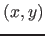
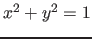
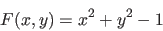
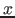

Next: The Brusselator example: Continuation Up: ManualJan2018 Previous: Heteroclinic orbits and further Contents
In this section a simple example is presented to illustrate the basic use of the continuer.
This example generates a curve in the -plane
such that . So if the user specifies a point reasonably close to this curve we
get the unit circle. The defining function is
|  | (98) |
| curve.m | |
| 1 | function out = curve |
| 2 | % |
| 3 | % Curve file of circle |
| 4 | % |
| 5 | |
| 6 | out{1} = @curve_func; |
| 7 | out{2} = @defaultprocessor; |
| 8 | out{3} = @options; |
| 9 | out{4} = []; %@jacobian; |
| 10 | out{5} = []; %@hessians; |
| 11 | out{6} = []; %@testf; |
| 12 | out{7} = []; %@userf; |
| 13 | out{8} = []; %@process; |
| 14 | out{9} = []; %@singmat; |
| 15 | out{10} = []; %@locate; |
| 16 | out{11} = []; %@init; |
| 17 | out{12} = []; %@done; |
| 18 | out{13} = @adapt; |
| 19 | function f = curve_func(arg) |
| 20 | x = arg; |
| 21 | f = x(1)^2+x(2)^2-1; |
| 22 | |
| 23 | function varargout = defaultprocessor(varargin) |
| 24 | if nargin > 2 |
| 25 | s = varargin{3}; |
| 26 | varargout{3} = s; |
| 27 | end |
| 28 | % no special data |
| 29 | varargout{2} = []; |
| 30 | % all done succesfully |
| 31 | varargout{1} = 0; |
| 32 | |
| 33 | function option = options |
| 34 | option = contset; |
| 35 | |
| 36 | function [res,x,v] = adapt(x,v) |
| 37 | res=[]; |
| 38 | |
| curve.m | |
>> init; >> cds=[]; >> [x,v,s]=cont(@curve,[1;0]); first point found tangent vector to first point found Closed curve detected at step 70 elapsed time = 0.1 secs npoints curve = 70cpl(x, v, s, e) makes a two or three dimensional plot. The fourth argument e is optional. x, v and s are the results of the previous continuation, e is an array whose elements define which coordinates of the system are used. Therefore e must have either 2 components (2D-plot) or 3 components (3D-plot). If e is not given and x has 2 (respectively 3) components, then a 2D-plot (3D-plot,respectively) is drawn. In all other cases an error message will be generated. The generated curve is plotted in Figure 34 with the command:
>> cpl(x,v,s)In this case x has dimension 2, so a 2D-plot is drawn with the first component of x (value of the state variable ) on the x-axis and the second component of x (value of the state variable
Note: The above command cds=[]; is needed if the global variable cds was used in previous computations. In this case the global variable cds in cont.m would probably have the wrong subfield cds.symjac. In the ``usual" situations in this manual a continuation is always performed after a call to an initializer, in which cds is also global and gets the correct cds.symjac. See also §3.8.